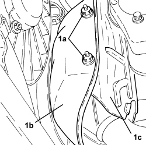
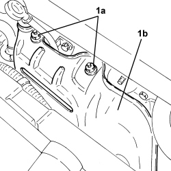

1072C40 LEFT EXHAUST MANIFOLD HEAT SHIELD - R.R.
- Path
- Procedures > 10 ENGINE > 1072 INLET AND EXHAUST MANIFOLDS > 1072C EXHAUST MANIFOLDS > 1072C40 LEFT EXHAUST MANIFOLD HEAT SHIELD - R.R.
- Kind
- repair procedure (removal / refitting; the operation number is the code)
- Applies to
- engines: 3.2 JTS; all production periods
- Interactive page
- https://sloeber94.github.io/elrnDB-aBrrSpdr/en/#/946001947
Applies to: engines: 3.2 JTS; all production periods
 Removing
Removing
 Refitting
RefittingOp. 7055B54 UNDER ENGINE PROTECTION/GUARD - R.R.
Op. 1080B92 LEFT UPPER LAMBDA SENSOR - R.R.
1. Undo the nuts (1a) securing the external heat shield (1b) to the internal one (1c).

Applies to: engines: 3.2 JTS; all production periods
1. Undo the nuts (1a) and remove the heat shield (1b) from the exhaust manifold.

Applies to: engines: 3.2 JTS; all production periods
Refitting
Removing- Place the heat shield back in its housing and secure it to the exhaust manifold using the nuts.
- Tighten the nuts fixing the external heat shield to the internal one.